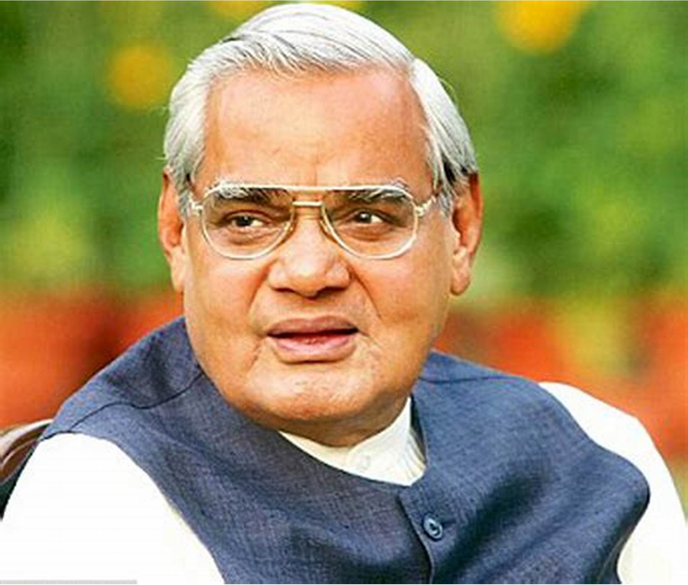
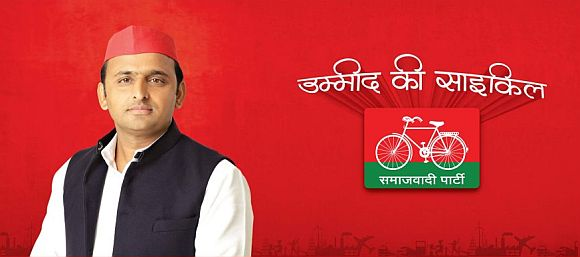
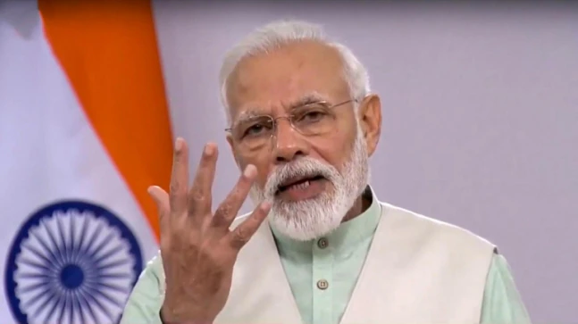
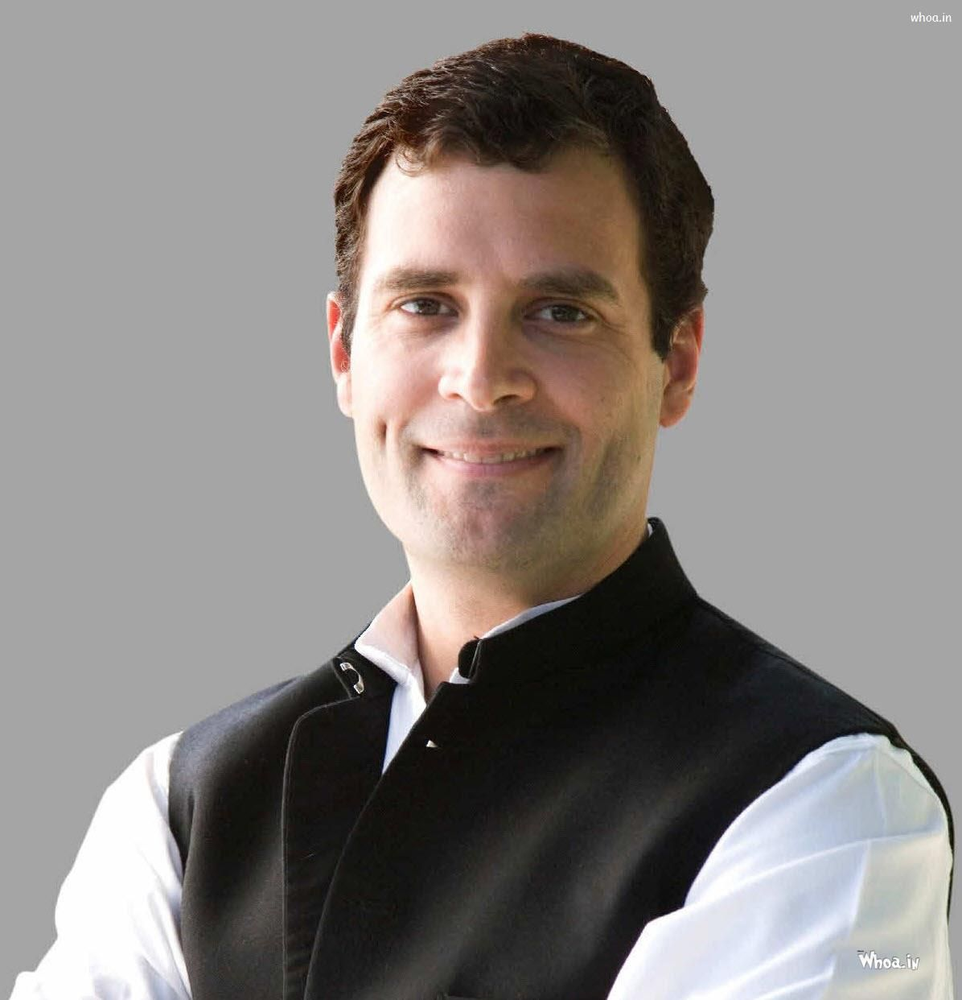
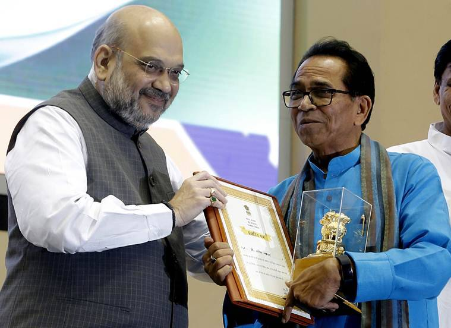
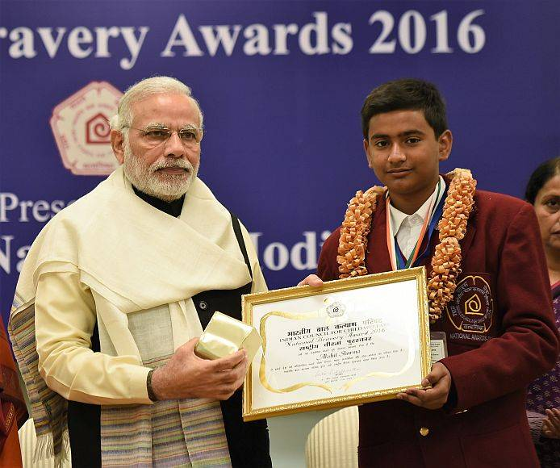
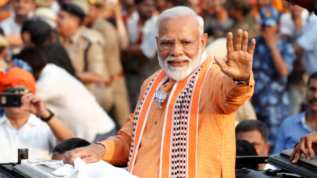
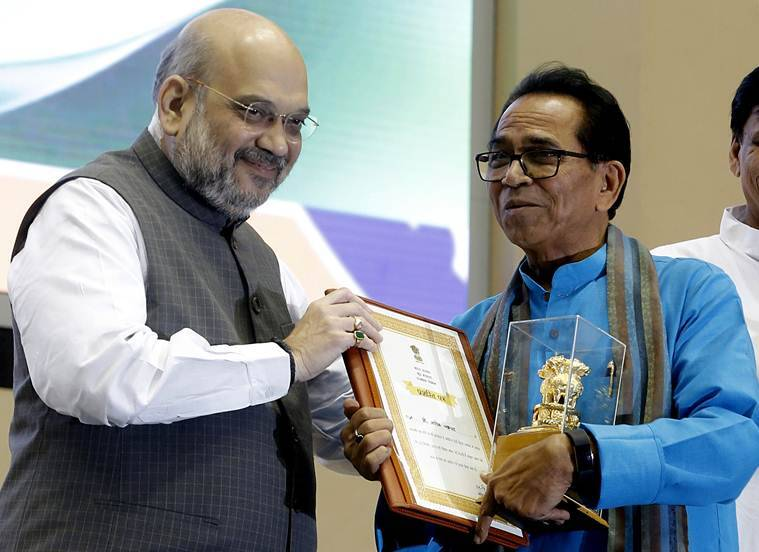
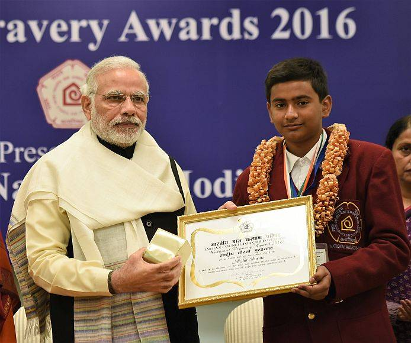
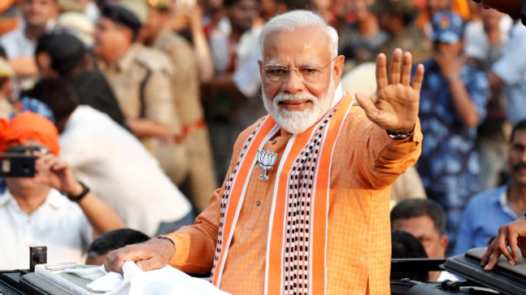

He was an Indian politician who held the position of 10th Prime Minister of India for three terms:
from 1996 for 13 days, to 1998 and 1999 for 13 months, and then from 1999 to 2004 a full time. One of the Bharatiya Janata Party's (BJP) co-founders and a prominent figure, Vajpayee, belonged to the Rashtriya Swayamsevak Sangh, a group of volunteers with Hindu nationalist views.

Akhilesh Yadav, son of Mulayam Singh Yadav is a dynamic young leader of Samajwadi leader. In March 2012, at the age of 38 years, he became the youngest person to hold the post. Akhilesh Yadav is now the president of National President of Samajwadi Party. Before the elections there was tussle in the Yadav family while Shivpal Singh wanted to push his candidates, Akhilesh was adamant on finalizing the candidate list. After much bickering in the family he assumed the command of the Samajwadi Party by dislodging his father Mulayam Singh Yadav and sidelining his uncle Shivpal Singh Yadav.

He is a dynamic, determined, and dedicated Prime Minister of India who was born on 17 September 1950 at Vadnagar, India. On 30 May 2019, he was sworn in as India's Prime Minister marking the start of his second term in office. He is also the longest-serving Chief Minister of Gujarat (October 2001 to May 2014). He is a personality of motivation who rose from a poverty-stricken tea-selling boy to a development-oriented leader.

Rahul Gandhi is born 19 June 1970 and Rahul Gandhi is an Indian politician and a former member of the Indian Parliament, who represented the constituencies of Amethi, Uttar Pradesh and Wayanad, Kerala in the Lok Sabha. He is a member of the main opposition party, the Indian National Congress and was the party president from December 2017 to July 2019. He is the chairperson of the Indian Youth Congress, the National Students Union of India and a trustee of the Rajiv Gandhi Foundation and Rajiv Gandhi Charitable Trust.
.jpg)
.jpg) 




